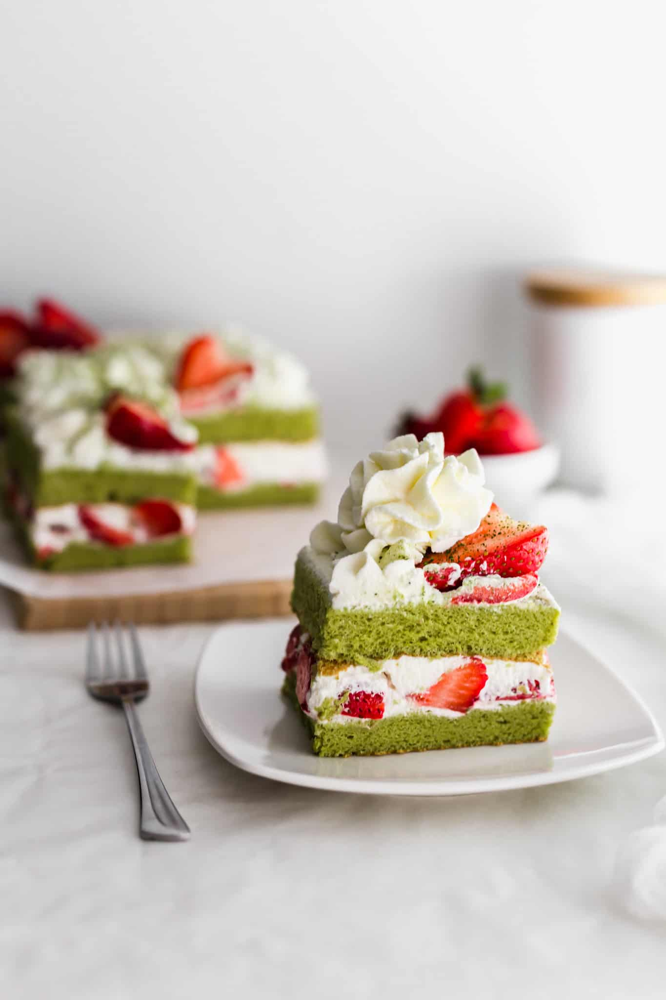

Matcha Strawberry Shortcake

Description
This is a recipe for light and fluffy layered Matcha Strawberry Shortcake, filled with whipped cream and fresh sliced strawberries. One slice and you're in heaven!
What is a Shortcake?
A shortcake is a sweet dessert with a crumbly bread/biscuit and is commonly served with sweetened, macerated strawberries. and whipped cream. Traditional shortcake has more of a biscuit-like texture, made with flour, butter, sugar, cream, leavener, and/or eggs. Modern shortcakes can be made with a biscuit or sponge cake. This version is more of a light and fluffy layered chiffon cake, based on the Swiss Cake Roll recipe.
Ingredients:
- Eggs
- Cream of tartar
- Avocado oil
- Milk
- Granulated cane sugar
- Vanilla extract
- Cake/pastry flour
- Matcha powder
Steps:
- Preparing the eggs: Remove eggs from fridge, and separate the egg whites from the egg yolks. Tips: ensure your bowl for beating the whites is clean, with no traces of oil. Oil can hinder the egg whites from beating up nicely. As easy way to do this is to give the bowl and whisk a quick wipe with paper towel and a bit of lemon juice or vinegar prior to adding the egg whites.
- Make the egg yolk batter: In a separate bowl, combine the egg yolks with 30g sugar and whisk together. Add in the oil, milk, vanilla extract and whisk again. Sift in the cake flour over top of the egg yolk mixture and fold gently to combine, until there are no lumps.
- Whip the egg whites: In a clean stand mixer bowl, fitted with a whisk attachment, add the room temperature egg whites. Turn on the mixer on low speed. Once the egg whites become foamy with bubbles, add in a little cream of tartar (or lemon juice/vinegar). Gradually increase the speed of the mixer, and slowly pour in the granulated sugar. Continue to whip the egg whites until fluffy, shiny and reaches a soft peak. (The egg whites will form a curved tail at the end of the whisk).
- Combine the mixtures: Using a spatula, fold about 1/3rd of egg whites into the egg yolk batter, This will help to loosen up the egg yolk batter. Continue to turn the bowl and fold until the mixture is almost homogeneous. Add the next 3rd of the egg white mixture, and continue to fold until the egg whites are incorporated into the batter, but be sure not to overfold or the egg whites will be deflated. Add the matcha powder and mix well.
- Bake the cake: Prepare a 9" by 13" baking tray with parchment paper. Preheat oven to 375F, transfer the cake batter to the baking tray. Give the tray a few taps to release any trapped air bubbles. Bake for about 15minutes until the cake surface is golden brown, dry and springy to the touch. Remove the cake from the oven and immediately drop it from a height of 1'. Let the cake cool on a cooling rack for 10-15 minutes.
- Make the whipped cream: In a chilled bowl, add in the heavy whipping cream, powdered sugar and vanilla extract. Whisk until the cream reaches stiff peaks.
- Assemble the cake: Place one layer of matcha cake onto a parchment lined baking tray. Place a thin layer of whipped cream onto the surface of the cake. Add sliced strawberries over the cream. Repeat until desire. Trim the edges on each side and spread a thin layer of cream on top of the cake. Pipe additional cream on top and decorate with more strawberries and matcha powder. Chill the cake in refrigerator for at least 1 hour prior to serving.
- Enjoy!
